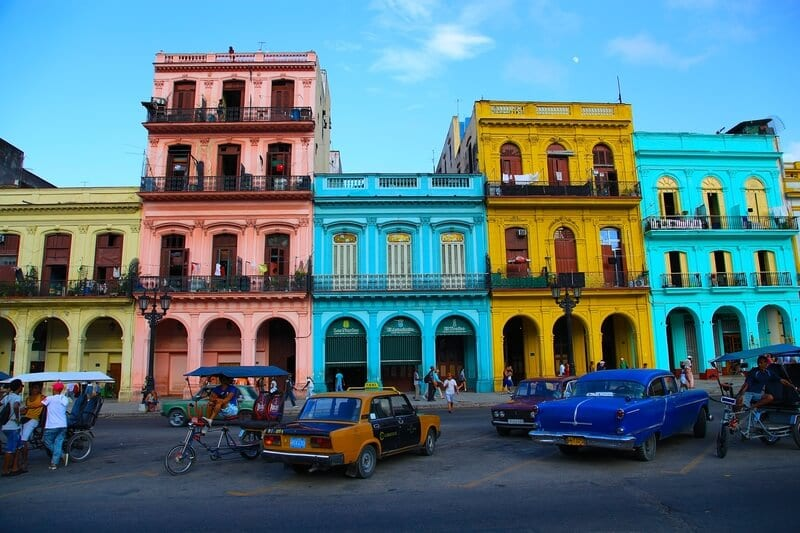
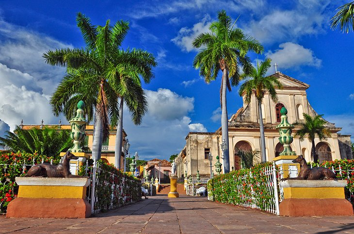
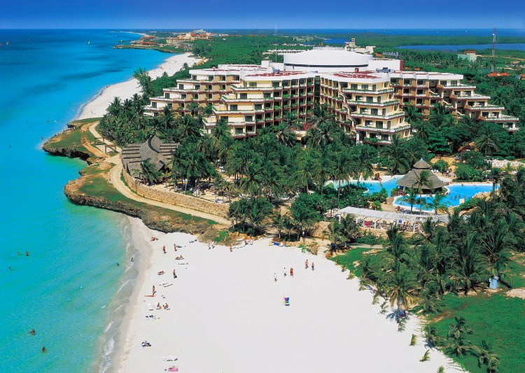

Ask any group of world travelers what the most beautiful city in the world is, and chances are Paris takes the prize. Perhaps you agree (or should find out for yourself). Even better for you are the special amenities and VIP treatment we can offer at some of the city’s finest hotels. While Paris makes for a perfect vacation estination on its own, there’s far, far more to France than just Paris, and we can take you there.


.
The first question always is: Can I still visit Cuba? -- and the answer is "yes"! And we'll help you do it the right way. While Americans visiting Cuba still need to travel under a proper permit, experiencing Cuba's fascinating culture as part of a Cuba tour group or on a private, custom-planned trip just for you is so worth it.
While the jury is still out on the exact location for the best scuba diving in Cuba, no matter where you get in the water, you can guarantee you are going to love it! Cuba dive trips are relatively straightforward to organize and have prices set by the state – Normally around $30 – $40 per submersion. Pristine waters, elegant corals and colorful fish await! Equipment quality is generally very high, and the guides professional!
With limited time and lots to cover, the most efficient and comfortable is to have us arrange your car and driver and guide to get you about safely and in air conditioned comfort. If you're traveling as part of a group on a guided vacation, you'll not have to contend with mastering local transportation. Otherwise, Cuba can be difficult to get around, but for all the difficulty, it does have a wide variety of transportation options.
Cuba is an island in the Caribbean Sea. As such, it experiences the beautiful sameness of temperatures in the seventies and eighties year round, punctuated with the occasional tropical storm. Hurricane season for the Caribbean is the same as it is for the U.S.
With limited time and lots to cover, the most efficient and comfortable is to have us arrange your car and driver and guide to get you about safely and in air conditioned comfort. If you're traveling as part of a group on a guided vacation, you'll not have to contend with mastering local transportation. Otherwise, Cuba can be difficult to get around, but for all the difficulty, it does have a wide variety of transportation options.

.
Resorts & Hotels in Cuba
Many of Cuba’s hotels aren’t up to U.S. standards and availability is falling short of demand. There are some boutique hotel options we have available, as well as privately staffed home rentals we can arrange.
.
HAVANA
Hotel Nacional de Cuba
The Hotel Nacional de Cuba is a historic Spanish eclectic style hotel in Havana, Cuba, opened in 1930.
VARADERO
Royalton Hicacos Resort & Spa
Royalton Hicacos is a resort in Varadero, in the province of Matanzas, Cuba.
CIENFUEGOS
Paradisus Princesa del Mar
High-end, all-inclusive beachfront resort with multiple restaurants, bars & lounges, plus 3 pools.